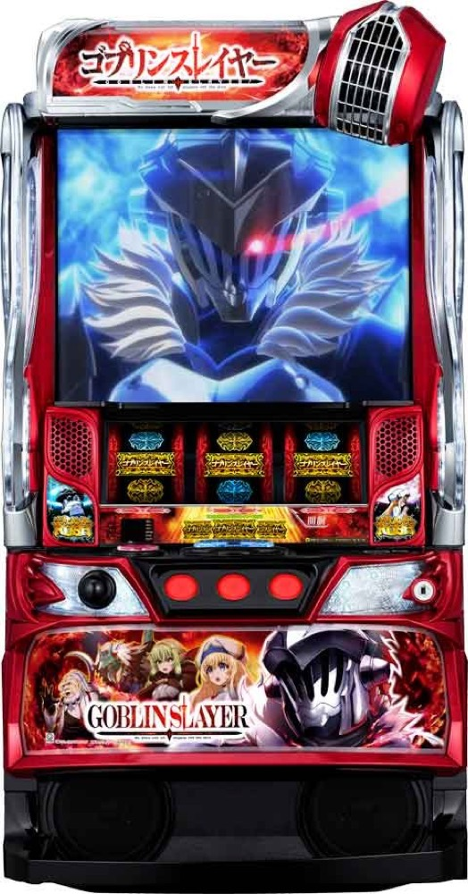

Lゴブリンスレイヤー
3種類のCZを突破し、約100枚＋純増約2.7枚/GのATへ。
- 導入
- 2023年4月
- メーカー
- JFJ
- 分類
- パチスロ
主要スペック
3種類のCZから純増約2.7枚/G・1セット100GのゴブリンスレイヤーRUSHを目指すセット継続機。オーブで継続率を上げ、5GのJUDGEMENT、報酬ジャッジ、純増約5.0枚/G・実質約82%のULTIMATE LOOPまでを専用演出で体験できます。
- CZはMISSION約33%・CHANCE約45%・BATTLE約70%
- 通常ATは1セット100G＋5G JUDGEMENT
- ULTIMATE LOOPは100G・純増約5.0枚/G・実質約82%
Lゴブリンスレイヤーの見どころと計算条件
3種類のCZから純増約2.7枚/G・1セット100GのゴブリンスレイヤーRUSHを目指すセット継続機。オーブで継続率を上げ、5GのJUDGEMENT、報酬ジャッジ、純増約5.0枚/G・実質約82%のULTIMATE LOOPまでを専用演出で体験できます。
スマスロ ゴブリンスレイヤーを数字で早分かり
CZ合算／AT直撃からゴブリンスレイヤーRUSH、ULTIMATE LOOPまでの流れと、設定ごとの結果差を固定レートで比較できます。
30秒で分かるスマスロ ゴブリンスレイヤー
3種類のCZを突破し、100GのATでオーブを集めて継続率を上げ、5GのJUDGEMENTから実質約82%のULTIMATE LOOPを目指す台です。
こんな遊び方に向いている
- 100Gを回して継続率を育てたい
- セット最後のPUSHで当落を見たい
- 純増約5.0枚/Gの上位ループを狙いたい
遊ぶ前に確認したいこと
- 52%・62%・80%はオーブ獲得を含む平均的な継続目安
- 3・5セット目はゴブリンロードのチャンス
- 通常時の全モードと小役履歴は代表モデルへ簡略化
設定別CZ・AT初当り
CZ合算は設定1約1/226から設定6約1/184、AT初当りは設定1約1/547.9から設定6約1/435.7です。
通常時はレア役、規定ゲーム数、スイカカウンター、小役履歴など複数契機があります。サイトでは設定別のCZ合算とAT初当りへまとめ、開始時に設定1〜6を均等抽選します。
3種類のCZを個別表示
ゴブリンスレイヤーミッションは10G＋2Gジャッジ・期待度約33%。ゴブリンスレイヤーチャンスは青BAR狙えカットイン3回まで継続・期待度約45%です。
ゴブリンスレイヤーバトルは最大7G・期待度約70%。サイトではCZ種類を開示し、それぞれのゲーム数を進めて最後のPUSHでAT当落を表示します。規定ゲーム数などからのAT直撃も代表ルートとして含めます。
100G ATとオーブの継続率上乗せ
ゴブリンスレイヤーRUSHは1セット100G＋α・純増約2.7枚/G。52%・62%・80%のループモードは固定継続率ではなく、オーブ獲得や最終継続率の上がりやすさに影響します。
オーブ3個ごとに継続率を10〜30%上乗せ。サイトではセットごとにオーブ数と最終継続率を表示し、100Gを最後まで消化してから5GのJUDGEMENTへ進みます。
JUDGEMENT・報酬ジャッジ・BONUS
JUDGEMENTは5G。ホブゴブリンまたはゴブリンロードを撃破できれば次セットへ進み、1Gの報酬ジャッジで連撃・大連撃・上位ATなどを決めます。
ゴブリンスレイヤーBONUSは20G・純増約2.7枚/Gで、終了後にATゲーム数を10G以上加算します。サイトではBONUS出玉とAT上乗せを分けて表示します。
ULTIMATE LOOP
3・5セット目はゴブリンロードのチャンスで、撃破時は約50%でULTIMATE LOOP。最大8セット継続でも上位移行濃厚です。AT初当り時の約1/70で直行するルートもあります。
ULTIMATE LOOPは1セット100G・純増約5.0枚/G・80%固定。ストック込みの実質継続は約82%で、突入時の期待獲得は3000枚OVERです。
固定レートと収支の条件
- 約31.6G/50枚・1,000円46枚貸し・5.2枚交換で固定
- 設定1基準の平均AT投資目安は約18,800円
- ATセット・BONUS・上位セットを別集計
- 19,000枚到達時はコンプリート表示
平均Gと投資目安の計算
掲載するゴブリンスレイヤーRUSH初当り約1/547.9は設定1基準です。当サイトでは50枚あたり31.6G、1,000円46枚貸しの固定条件から、設定1基準の平均投資目安を約18,800円と計算します。
シミュレーターでは設定1〜6を均等抽選します。設定1〜6で公開されている初当り値を個別に使います。公開されていない特化ゾーン・上位到達率の設定差は加えません。 換金は5.2枚交換で固定し、結果とランキングに設定を表示します。
シミュレーション結果の見方
当るまでCZ合算／AT直撃・ゴブリンスレイヤーRUSHまでのゲーム数
設定設定1・2・3・4・5・6から抽選された今回の設定
上位到達JUDGEMENT・ゴブリンロードとULTIMATE LOOPへの到達
最終収支差枚と5.2枚交換の収支目安
結果は自動で「マイ記録」に保存され、同じ機種を何回試したか、最高収支、勝率をあとから確認できます。
簡易シミュレーターについて
CZ合算／AT直撃・ゴブリンスレイヤーRUSH・ULTIMATE LOOPの流れを固定条件で体験できます。JavaScriptを有効にすると、この位置にシミュレーター、演出、マイ記録、機種別ランキングが表示されます。
結果は娯楽・確率理解のための参考表示です。金銭的価値や交換価値はなく、実際の勝敗や収支を保証しません。18歳未満の方の利用はお控えください。
スマスロ ゴブリンスレイヤーのよくある質問
スマスロ ゴブリンスレイヤーはどんな台？
3種類のCZから純増約2.7枚/G・1セット100GのゴブリンスレイヤーRUSHを目指すセット継続機。 CZはMISSION約33%・CHANCE約45%・BATTLE約70%が主な確認ポイントです。
スマスロ ゴブリンスレイヤーの平均投資目安は？
設定1基準のゴブリンスレイヤーRUSH初当り約1/547.9と、50枚あたり31.6G・46枚貸しの固定条件から、平均18,800円を目安として表示します。実際の設定や遊技状況で結果は変わります。
設定とゲームの流れはどう抽選する？
開始時に設定1・2・3・4・5・6から1つを均等抽選し、CZ合算／AT直撃、ゴブリンスレイヤーRUSH、JUDGEMENT・ゴブリンロード、ULTIMATE LOOPの順で到達を判定します。設定は最終結果とランキングに表示します。
収支はどう計算する？
1,000円46枚貸し・5.2枚交換の固定条件で投資、換金、収支目安を計算します。実店舗の再プレイ、持ちメダル、端数処理は含みません。